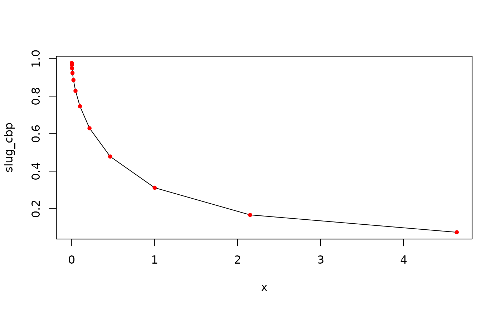

Slug test steps
slug_test.RmdCooper Bredehoeft Papadopulos 1967
# check vs. CBP 1967 table 1
Tt_r2 <- rep(c(1.0, 2.15, 4.64), 4) * 10^(rep(c(-3, -2, -1, 0), each = 3))
a_01 <- c(0.9771, 0.9658, 0.9490, 0.9238, 0.8860, 0.8283,
0.7460, 0.6289, 0.4782, 0.3117, 0.1665, 0.07415)
a_0001 <- c(0.9969, 0.9949, 0.9914, 0.9853, 0.9744, 0.9545,
0.9183, 0.8538, 0.7436, 0.5729, 0.3543, 0.1554)
a_000001 <- c(0.9992, 0.9985, 0.9970, 0.9942, 0.9888, 0.9781,
0.9572, 0.9167, 0.8410, 0.7080, 0.5038, 0.2620)
dat <- list(x = Tt_r2)
formula = formula(x~.)
frec1 = recipe(formula = formula, data = dat) |>
step_slug_cbp(
times = x,
radius = 1.0,
radius_casing = 1.0,
radius_well = 1.0,
specific_storage = 1e-1,
hydraulic_conductivity = 1.0,
thickness = 1.0,
head_0 = 1.0,
n_terms = 12L
) |>
plate("dt")
plot(slug_cbp~x, frec1, type = "l")
points(a_01~dat$x, col = "red", pch = 20)
# data(bouwer)
# bw <- as.data.frame(bouwer)
#
# rc <- 4/2/12 # radius of 2 inches
# rw <- 8.25/2/12 # radius of screen
# Le <- 10 # screen length
# y0 <- 1.44 # initial drawdown
# Lw <- 17.92 # height of water above screen bottom
# wl <- 6.08 # static wl
# H <- 18.92 # height of water level above base
# t <- as.numeric(bouwer$datetime - bouwer$datetime[1]) # elapsed time
# y <- wl - bouwer$val # change in wl
#
#
# bouwer_rice(t, y, rw, rc, Le, Lw, H) * 86400 # should be 4.5References
Bouwer, H., 1989. The Bouwer and Rice Slug Test—An Update a. Groundwater, 27(3), pp.304-309.
Cooper, H.H., J.D. Bredehoeft and S.S. Papadopulos, 1967. Response of a finite-diameter well to an instantaneous charge of water, Water Resources Research, vol. 3, no. 1, pp. 263-269.
sessionInfo()
#> R version 4.4.2 (2024-10-31)
#> Platform: x86_64-pc-linux-gnu
#> Running under: Ubuntu 24.04.1 LTS
#>
#> Matrix products: default
#> BLAS: /usr/lib/x86_64-linux-gnu/openblas-pthread/libblas.so.3
#> LAPACK: /usr/lib/x86_64-linux-gnu/openblas-pthread/libopenblasp-r0.3.26.so; LAPACK version 3.12.0
#>
#> locale:
#> [1] LC_CTYPE=C.UTF-8 LC_NUMERIC=C LC_TIME=C.UTF-8
#> [4] LC_COLLATE=C.UTF-8 LC_MONETARY=C.UTF-8 LC_MESSAGES=C.UTF-8
#> [7] LC_PAPER=C.UTF-8 LC_NAME=C LC_ADDRESS=C
#> [10] LC_TELEPHONE=C LC_MEASUREMENT=C.UTF-8 LC_IDENTIFICATION=C
#>
#> time zone: UTC
#> tzcode source: system (glibc)
#>
#> attached base packages:
#> [1] stats graphics grDevices utils datasets methods base
#>
#> other attached packages:
#> [1] hydrorecipes_0.0.6 Bessel_0.6-1
#>
#> loaded via a namespace (and not attached):
#> [1] cli_3.6.3 knitr_1.49 rlang_1.1.5 xfun_0.50
#> [5] textshaping_1.0.0 data.table_1.16.4 jsonlite_1.8.9 htmltools_0.5.8.1
#> [9] earthtide_0.1.7 ragg_1.3.3 sass_0.4.9 gmp_0.7-5
#> [13] rmarkdown_2.29 evaluate_1.0.3 jquerylib_0.1.4 fastmap_1.2.0
#> [17] yaml_2.3.10 lifecycle_1.0.4 compiler_4.4.2 fs_1.6.5
#> [21] htmlwidgets_1.6.4 Rcpp_1.0.14 systemfonts_1.2.1 digest_0.6.37
#> [25] collapse_2.0.19 R6_2.5.1 parallel_4.4.2 bslib_0.8.0
#> [29] tools_4.4.2 Rmpfr_1.0-0 RcppThread_2.2.0 pkgdown_2.1.1
#> [33] cachem_1.1.0 desc_1.4.3